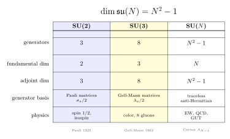

SU(N) 与基本表示 — SU(2) 是同位旋, SU(3) 是颜色, 一般规律是什么?
上一节我们把 Lie 群和 Lie 代数搭起架子: 一个连续对称变换, 在恒等元附近被它的 Lie 代数 (生成元) 完全编码. 这一节我们挑出物理上最重要的一族 — 特殊幺正群 SU(N). 它在量子力学里几乎无处不在: 自旋 1/2 的 $\mathrm{SU}(2)$, 同位旋的 $\mathrm{SU}(2)$, QCD 的 $\mathrm{SU}(3)$, 弱相互作用的 $\mathrm{SU}(2)\times \mathrm{U}(1)$, GUT 的 $\mathrm{SU}(5)$. 它们维数不同, 物理含义不同, 但写下来的代数结构惊人地一致 — 都是某个 $N$ 的 $N^2-1$ 个生成元在指挥. 这个 $N^2-1$ 从哪儿来? 8 个胶子 (而不是 9 个) 是经验问题还是代数问题? 这一节我们就把这条规律从根上拔起来.
一、从幺正变换到 SU(N) 的定义
量子力学态的演化必须保持内积 (概率守恒), 因此态空间上的对称变换要是幺正算符. 在有限维 $\mathbb C^N$ 上, 幺正算符就是 $N\times N$ 的幺正矩阵 $U$, 满足 $$ U^\dagger U = I.\tag{1} $$ 全体这样的矩阵在矩阵乘法下构成一个群, 叫 $\mathrm{U}(N)$ — 幺正群. 取行列式: 由 (1) 式 $|\det U|^2=\det(U^\dagger U)=1$, 故 $\det U$ 是模 1 复数, 即 $\det U=e^{i\varphi}$ 中的一个相位. 这个相位是个 $\mathrm{U}(1)$ 自由度, 物理上往往对应一个全局相位 (在 QM 里被 Born 规则忽略). 把它去掉, 只保留 $\det U=1$ 那一支, 就是特殊幺正群 $$ \mathrm{SU}(N)=\{U\in\mathrm{Mat}_{N\times N}(\mathbb C):U^\dagger U=I,\;\det U=1\}. $$ "特殊"是 special 的直译, 意思是行列式为 1 — 与 SO(N) 中的"S"同源. SU(N) 里的元素在希尔伯特空间 $\mathbb C^N$ 上保持内积、保持体积、保持取向, 是最干净的一类对称.
它是一个紧致的连通 Lie 群 — 紧致来自 (1) 式让所有矩阵元都被 $|U_{ij}|\le 1$ 框住, 连通来自任何 $\det U=1$ 的幺正矩阵都可以连续地连回单位矩阵. 它的拓扑维数 (作为 Lie 群作为流形的实维数) 我们马上要算 — 这正是 $N^2-1$ 这个数登台的瞬间.
二、Lie 代数 $\mathfrak{su}(N)$: 反厄米 + 无迹
按照上一节的处方, Lie 代数是恒等元附近的"无穷小群元素". 取 $U=I+\epsilon X+O(\epsilon^2)$, 把它代回两个约束.
幺正条件 $U^\dagger U=I$ 给出 $$ (I+\epsilon X^\dagger)(I+\epsilon X)=I+\epsilon(X^\dagger+X)+O(\epsilon^2)=I, $$ 到一阶 $X^\dagger+X=0$, 即 $X$ 是反厄米 ($X^\dagger=-X$). 行列式条件 $\det U=1$ 用 Jacobi 公式 $\det(I+\epsilon X)=1+\epsilon\,\Tr X+O(\epsilon^2)$, 到一阶得 $\Tr X=0$, 即 $X$ 无迹. 合起来, $$ \mathfrak{su}(N)=\{X\in\mathrm{Mat}_{N\times N}(\mathbb C):X^\dagger=-X,\;\Tr X=0\}.\tag{2} $$ 这个集合在矩阵换位 $[X,Y]=XY-YX$ 下封闭 (反厄米的换位还是反厄米, 无迹的换位还是无迹), 因而是一个 Lie 代数.
现在数维数. 把 $\mathfrak{su}(N)$ 当成 $\mathbb R$ 上的向量空间 (Lie 代数的标量域取实数 — 反厄米矩阵不在复数域下封闭, $iX$ 厄米不反厄米). 一个一般的 $N\times N$ 复矩阵有 $2N^2$ 个实参数. 反厄米条件 $X^\dagger=-X$ 把它们对半砍: 对角元 $X_{ii}$ 必须纯虚 ($N$ 个实参数), 非对角元 $X_{ij}$ 与 $X_{ji}$ 互为负共轭 ($X_{ji}=-\overline{X_{ij}}$, 留下 $N(N-1)$ 个实参数, 因为每对独立的复数 $X_{ij}$ 给两个实数). 合计 $N+N(N-1)=N^2$ 个实参数 — 这是 $\mathfrak{u}(N)$ 的维数. 再施加 $\Tr X=0$, 它是一个实约束 (反厄米矩阵的迹是纯虚, 所以 $\Tr X=0$ 等价于其虚部为零, 一个实方程), 把维数再砍掉 1, 故 $$ \dim_{\mathbb R}\mathfrak{su}(N)=N^2-1. $$ 正是这个数. SU(2) 是 $4-1=3$, SU(3) 是 $9-1=8$, SU(5) 是 $25-1=24$. 它不是经验给的, 是矩阵的代数留下的.

三、三个基础表示: fundamental, $\bar N$, adjoint
群本身是抽象的, 物理用得着的是它怎么"作用"在向量空间上 — 这就是表示. 给定一个 Lie 群 $G$ 和一个向量空间 $V$, 一个表示是一个保群结构的映射 $\rho:G\to\mathrm{GL}(V)$, 把每个群元 $g$ 派一个线性变换 $\rho(g)$, 满足 $\rho(g_1 g_2)=\rho(g_1)\rho(g_2)$. SU(N) 上有三个最基本的表示, 物理意义都明确, 我们逐个挑出来.
(i) 基本表示 (fundamental, 维数 $N$). 最自然的: 让 SU(N) 直接作用在它"出生时"的列向量空间 $\mathbb C^N$ 上, $U\in\mathrm{SU}(N)$ 把 $v\in\mathbb C^N$ 送到 $Uv$. 这就是定义本身. 在 SU(2) 中它是自旋 $1/2$ 旋量空间 — 一个上下两分量的 $\ket\uparrow,\ket\downarrow$. 在 SU(3) (色) 中它是夸克场 $q=(q_r,q_g,q_b)^\top$ — 红、绿、蓝三个色态.
(ii) 共轭基本表示 ($\bar N$). 如果把 $U$ 换成 $U^*$ (复共轭), 仍然是一个表示 (因为 $U^*$ 也是幺正的、行列式也是 1 — $\det U^*=\overline{\det U}=1$). 这给出另一个 $N$ 维表示, 记 $\bar N$. 对 SU(2), $\bar 2$ 与 $2$ 通过 $\epsilon_{ab}=\begin{pmatrix}0&1\\-1&0\end{pmatrix}$ 等价; 这是为什么自旋 1/2 的反粒子也填进同一个二重态 — SU(2) 的 fundamental 是"自共轭"的. 对 SU(3) 不再如此: $\bar 3$ 与 $3$ 不等价, 反夸克 $\bar q=(\bar q_r,\bar q_g,\bar q_b)^\top$ 在 $\bar 3$ 表示里, 与 $3$ 中的夸克在张量积下相乘, 才把介子拼出来 ($q\bar q$ 在 $3\otimes\bar 3=8\oplus 1$).
(iii) 伴随表示 (adjoint, 维数 $N^2-1$). 把群作用在它自己的 Lie 代数上 — Lie 代数自身是个向量空间, 维数 $N^2-1$. 群元 $U$ 把生成元 $X\in\mathfrak{su}(N)$ 送到 $UXU^{-1}$ (内自同构). 这定义了一个 $(N^2-1)$ 维表示, 叫 adjoint. 物理上, 规范玻色子 (光子、$W,Z$、胶子) 都坐在伴随表示里 — 因为在 Yang-Mills 理论中规范场 $A_\mu=A_\mu^a T_a$ 把 Lie 代数当向量空间, 它在规范变换下走的就是 adjoint.
这三个表示的维数串成一个口诀:
- SU(2): fundamental $2$, adjoint $3$. 物理: 旋量 (2 分量) 和向量 (3 分量, $\sigma_x,\sigma_y,\sigma_z$ 对应 $J_x,J_y,J_z$).
- SU(3): fundamental $3$, $\bar 3$ 也是 $3$, adjoint $8$. 物理: 三色夸克和八种胶子.
- SU(5): fundamental $5$, adjoint $24$. 物理 (Georgi-Glashow GUT): 一代费米子塞进 $\bar 5\oplus 10$, 24 个规范玻色子里既有 SM 的 $8+3+1=12$ 个, 又有 12 个新的 X、Y 玻色子 — 直接预言质子衰变.
四、具体例子: 三个 Pauli 矩阵和八个 Gell-Mann 矩阵
抽象规律 $N^2-1$ 看着干净, 但物理学家更想看看那 $3$ 个、$8$ 个生成元长什么样. 我们逐个写下来, 既验证维数, 又把 Cartan 子代数的概念顺手介绍.
SU(2): 三个 Pauli 矩阵. 把 $$ \sigma_1=\begin{pmatrix}0&1\\1&0\end{pmatrix},\;\sigma_2=\begin{pmatrix}0&-i\\i&0\end{pmatrix},\;\sigma_3=\begin{pmatrix}1&0\\0&-1\end{pmatrix} $$ 乘上 $i/2$ (即 $T_a=\sigma_a/2$, 而 $iT_a$ 进入反厄米代数 $\mathfrak{su}(2)$). 直接验证: $\sigma_a$ 都是厄米无迹的 (所以 $iT_a=i\sigma_a/2$ 是反厄米无迹的). 它们在矩阵换位下满足 $$ [T_a,T_b]=i\epsilon_{abc}T_c, $$ 这就是熟悉的角动量代数. 三个生成元, 与 $\dim\mathfrak{su}(2)=2^2-1=3$ 完全吻合. Cartan 子代数 (最大对易子集合) 在 SU(2) 是一维的, 由 $T_3=\sigma_3/2$ 张成 — 这是为什么我们习惯把自旋按 $S_z$ 本征值分类: 一族对易算符的最大数目就是 1, SU(2) 的秩是 $1=N-1$.
SU(3): 八个 Gell-Mann 矩阵. Murray Gell-Mann 在 1961 年写下八个 $3\times 3$ 厄米无迹矩阵 $\lambda_1,\ldots,\lambda_8$, 直接推广了 Pauli 矩阵: $$ \lambda_1=\begin{pmatrix}0&1&0\\1&0&0\\0&0&0\end{pmatrix},\;\lambda_2=\begin{pmatrix}0&-i&0\\i&0&0\\0&0&0\end{pmatrix},\;\lambda_3=\begin{pmatrix}1&0&0\\0&-1&0\\0&0&0\end{pmatrix}, $$ $$ \lambda_4=\begin{pmatrix}0&0&1\\0&0&0\\1&0&0\end{pmatrix},\;\lambda_5=\begin{pmatrix}0&0&-i\\0&0&0\\i&0&0\end{pmatrix},\;\lambda_6=\begin{pmatrix}0&0&0\\0&0&1\\0&1&0\end{pmatrix}, $$ $$ \lambda_7=\begin{pmatrix}0&0&0\\0&0&-i\\0&i&0\end{pmatrix},\;\lambda_8=\frac{1}{\sqrt 3}\begin{pmatrix}1&0&0\\0&1&0\\0&0&-2\end{pmatrix}. $$ 数一下: 八个. 验证 $\dim\mathfrak{su}(3)=3^2-1=8$. 取 $T_a=\lambda_a/2$, 则 $iT_a$ 是 $\mathfrak{su}(3)$ 的一组实基底. 它们的对易关系 $$ [T_a,T_b]=i\,f_{abc}T_c $$ 里出现的结构常数 $f_{abc}$ 是完全反对称的, 非零分量包括 $f_{123}=1, f_{147}=f_{246}=f_{257}=f_{345}=\tfrac12, f_{156}=f_{367}=-\tfrac12, f_{458}=f_{678}=\tfrac{\sqrt 3}{2}$. SU(3) 的 Cartan 子代数 (最大对易子集合) 由 $\lambda_3$ 与 $\lambda_8$ 张成, 二维 — SU(3) 的秩是 $2=N-1$. 物理上, $\lambda_3$ 与 $\lambda_8$ 一对正是 Gell-Mann 在介子八重态分类时用的两个量子数 (同位旋第三分量 $I_3$ 与超荷 $Y$); 八重态的"哈密顿盘"图就是按这两个本征值排出来的二维菱形.
Young 杨表 — 张量积分解的一行小笔记. 把两个基本表示张乘起来 $N\otimes N$ 会得到 $N^2$ 维空间, 它一定不可约不下去吗? Young 表给出一套图形规则: SU(3) 中 $3\otimes 3=6\oplus\bar 3$ (两个夸克: 对称六重态加反对称反三重态), $3\otimes\bar 3=8\oplus 1$ (夸克-反夸克: 八重介子加单态), $3\otimes 3\otimes 3=10\oplus 8\oplus 8\oplus 1$ (三个夸克: 重子十重态加两个八重态加一单态). 重子八重态 (含质子、中子) 与重子十重态 ($\Delta,\Sigma^*,\Xi^*,\Omega^-$) 的 SU(3) 分类, 让 Gell-Mann 在 1962 年成功预言 $\Omega^-$ 的存在 — 1964 年实验证实, 是 SU(3) 对称性的第一个明确实验胜利.
五、历史与物理回响
SU(N) 这一族不是为物理量身打造的, 它是 19 世纪末 20 世纪初纯数学的产物. 1894 年起, 法国数学家Élie Cartan 在他的博士论文中开始, 到 1913 年前后完成了所有单 Lie 代数的分类: 四族经典型 $A_n=\mathfrak{su}(n+1)$ (即 $\mathfrak{su}(N)$ 的家族), $B_n=\mathfrak{so}(2n+1)$, $C_n=\mathfrak{sp}(2n)$, $D_n=\mathfrak{so}(2n)$, 加上五个例外型 $G_2,F_4,E_6,E_7,E_8$. 这是抽象代数史上最深刻的分类定理之一. 当 Cartan 作分类时, 没有一个物理学家想到他列出的 $A_2$ 会在六十年后被夸克填上.
1932 年 Heisenberg 注意到质子和中子质量近乎相等, 提出"同位旋"概念 — 把它们看成 SU(2) 二重态的两个分量. 1954 年 Yang Chen-Ning 与 Mills 把同位旋 SU(2) 推广为局部对称, 写下著名的 Yang-Mills 论文 Conservation of Isotopic Spin and Isotopic Gauge Invariance, 给规范场论装上了非阿贝尔的引擎. 1961 年 Gell-Mann 与 Ne'eman 独立地用 SU(3) 分类强子, 1964 年 Gell-Mann 与 Zweig 提出夸克模型. 1973 年 Fritzsch、Gell-Mann 与 Leutwyler 把"颜色 SU(3)"立为强相互作用的规范群 — QCD 诞生. 一年后 Georgi 与 Glashow 写下 SU(5) 大统一: 把 SM 的 $\mathrm{SU}(3)\times\mathrm{SU}(2)\times\mathrm{U}(1)$ 嵌入 $\mathrm{SU}(5)$ (维数 $24=8+3+1+12$, 那 12 个新的就是 X、Y 玻色子). 后来又有 SO(10) 把一代费米子整体塞进单个 16 维旋量表示. 这些尝试还没全被实验证实, 但所用语法都是同一套: $\dim\mathfrak{su}(N)=N^2-1$.
物理回响串到我们这套书里, 直接的几条线:
- 卷三第 9 节《SU(3) QCD》把 8 个 Gell-Mann 矩阵真正写进了 Lagrangian, 八个胶子 $G_\mu^a$ ($a=1,\ldots,8$) 的指标 $a$ 跑遍伴随表示 — 8 这个数就是本节的 $3^2-1$.
- 卷三第 8 节《电弱》用 SU(2)$_L\times$U(1)$_Y$ 处理弱相互作用, 三个 SU(2) 规范玻色子 $W^1,W^2,W^3$ 与 U(1) 的 $B$ 通过 Higgs 机制混成 $W^\pm,Z^0$ 与光子 — 这是 $\dim\mathfrak{su}(2)=3$ 的直接落地.
- 卷三第 11 节《三代》讨论的弱同位旋, 把每代左手费米子 $(\nu_e,e)_L$ 等摆在 SU(2) 二重态 — 也就是本节的基本表示 $N=2$.
- 卷三第 29 节《GUT》把 SM 嵌入 SU(5), SO(10), 都是本节"维数 = 群元素自由度"算法的高维版本.
小结
SU(N) 是物理学最重要的对称群家族. 一行公式 $\dim\mathfrak{su}(N)=N^2-1$ 同时回答了三个看起来无关的问题: 为什么 SU(2) 有 3 个 Pauli 矩阵, 为什么 SU(3) 有 8 个胶子, 为什么 SU(5) GUT 多出 12 个 X、Y 玻色子. 三个基本表示 (fundamental $N$ 维, $\bar N$ 维, adjoint $N^2-1$ 维) 把粒子物理的"什么粒子在什么表示里"翻译成了一张表: 物质场放进 fundamental, 规范场放进 adjoint, 反粒子放进 $\bar N$. 下一节我们要把"群是流形"这个直觉抽象出来 — 把 SU(2) 当成三维球面, SU(3) 当成八维流形, 都看作"流形"这个更广阔范畴里的特例; 那是从代数到几何的第一步.
▲